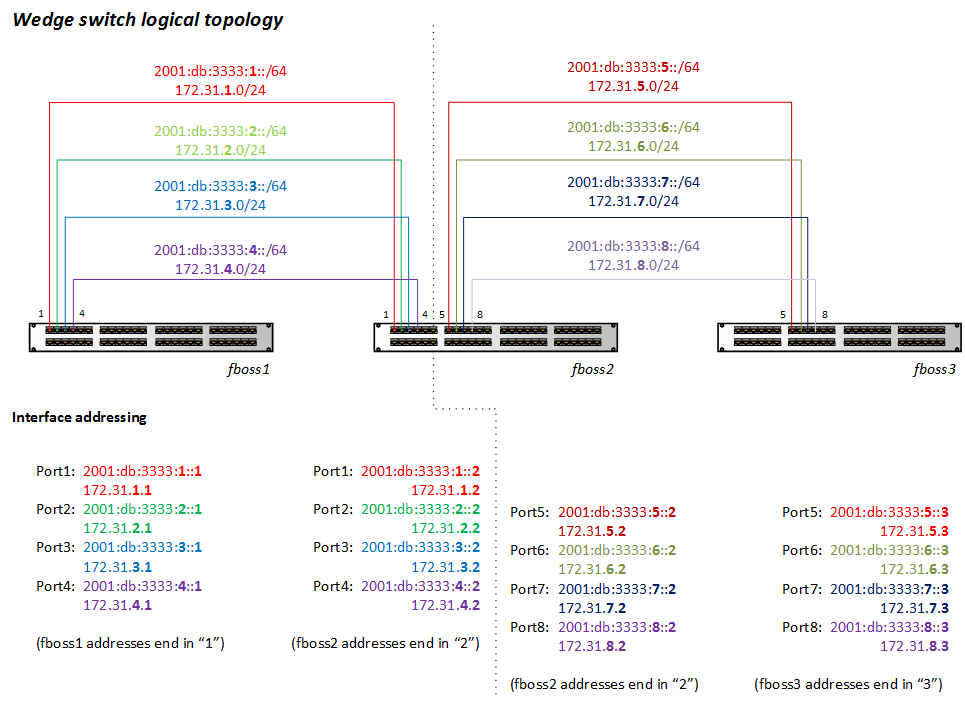
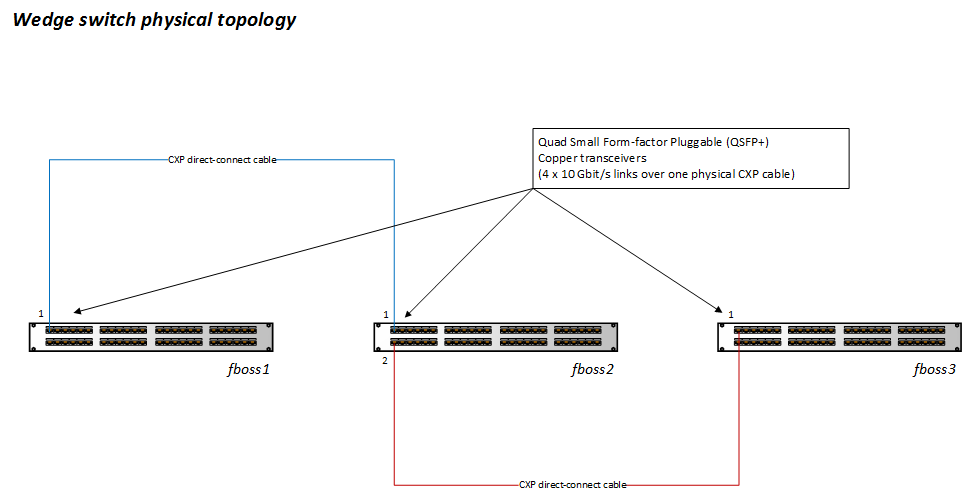

Demo Physical & VLAN config
MAIN DEMO PAGE
Intro info
Three switches, top to bottom: fboss1, fboss2, fboss3.
Each physical connection (qsfp) is actually 4 physical ports: 1-4, 5-8, etc.
Each switch's IP addresses end in whatever their switch number is: fboss1 is
always .1 or ::1, fboss 2 is always .2 or ::2, fboss3 is always .3 or ::3.
Each network/port is represented by the second-to-last part of the IP
address.
Graphical Diagrams


Textual Diagrams
fboss1
- Ports 1-4 connect to fboss2 ports 1-4.
- Port 1: 172.31.1.0/24 and 2001:db:3333:1::/64
(172.31.1.1 / 2001:db:3333:1::1)
- Port 2: 172.31.2.0/24 and 2001:db:3333:2::/64
(172.31.2.1 / 2001:db:3333:2::1)
- Port 3: 172.31.3.0/24 and 2001:db:3333:3::/64
(172.31.3.1 / 2001:db:3333:3::1)
- Port 4: 172.31.4.0/24 and 2001:db:3333:4::/64
(172.31.4.1 / 2001:db:3333:4::1)
fboss2
- Ports 1-4 connect to fboss1 ports 1-4.
- Port 1: 172.31.1.0/24 and 2001:db:3333:1::/64
(172.31.1.2 / 2001:db:3333:1::2)
- Port 2: 172.31.2.0/24 and 2001:db:3333:2::/64
(172.31.2.2 / 2001:db:3333:2::2)
- Port 3: 172.31.3.0/24 and 2001:db:3333:3::/64
(172.31.3.2 / 2001:db:3333:3::2)
- Port 4: 172.31.4.0/24 and 2001:db:3333:4::/64
(172.31.4.2 / 2001:db:3333:4::2)
- Ports 5-8 connect to fboss3 ports 5-8.
- Port 5: 172.31.5.0/24 and 2001:db:3333:5::/64
(172.31.5.2 / 2001:db:3333:5::2)
- Port 6: 172.31.6.0/24 and 2001:db:3333:6::/64
(172.31.6.2 / 2001:db:3333:6::2)
- Port 7: 172.31.7.0/24 and 2001:db:3333:7::/64
(172.31.7.2 / 2001:db:3333:7::2)
- Port 8: 172.31.8.0/24 and 2001:db:3333:8::/64
(172.31.8.2 / 2001:db:3333:8::2)
fboss3
- Ports 5-8 connect to fboss2 ports 5-8.
- Port 5: 172.31.5.0/24 and 2001:db:3333:5::/64
(172.31.5.3 / 2001:db:3333:5::3)
- Port 6: 172.31.6.0/24 and 2001:db:3333:6::/64
(172.31.6.3 / 2001:db:3333:6::3)
- Port 7: 172.31.7.0/24 and 2001:db:3333:7::/64
(172.31.7.3 / 2001:db:3333:7::3)
- Port 8: 172.31.8.0/24 and 2001:db:3333:8::/64
(172.31.8.3 / 2001:db:3333:8::3)